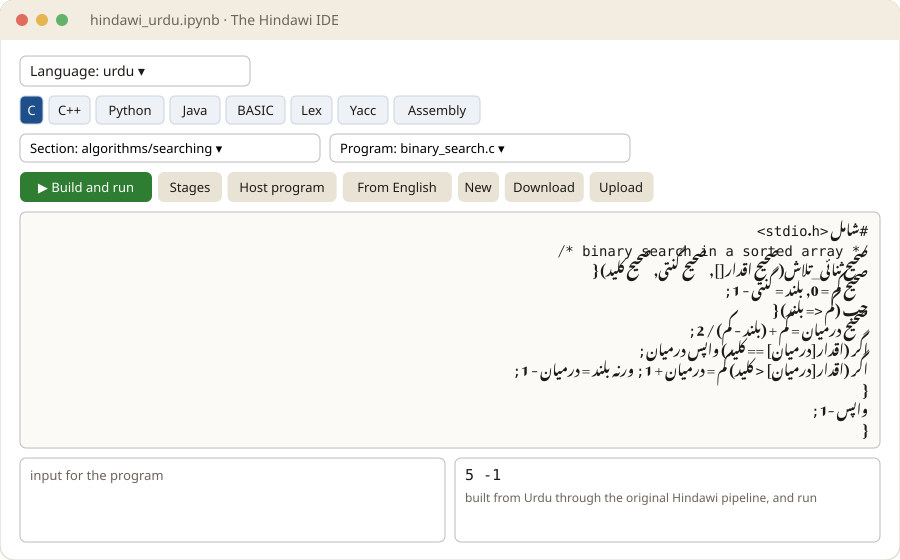

Program in your own language.
All the way to the chip.
Hindawi compiles programs written in the languages and scripts people speak, through to machine code. Since 2004. Practise on a phone, follow a letter into the chip, build a robot, or run the whole sovereign stack.
Try it now, on a phone How does a letter reach the chip?Every language Hindawi supports
76 languages, 48 of them ready to compile today. Tap a language: the 48 with a notebook open it in Colab, with the IDE on top; the rest open the Shaili Robot in that language.

Shaili Robot, in your language
Write the robot's program in any of these languages: the turtle draws what it says.
Start here
On a phone
Program in your language in a notebook, nothing to install. Open one below and press play.
Curious
One character, followed from the keyboard to the voltage on a wire, and back.
Teaching or building robots
Parts, wiring, the program in your language, driving from a phone.
Engineer or reviewer
The compiler, the GATE programs, the standards, the tests, and Parashakti.
Notebooks: اردو हिन्दी తెలుగు ಕನ್ನಡ ਪੰਜਾਬੀ संस्कृतम् سنڌي شاہمکھی دری پښتو
Products
Inside the machine
APCISR forming Indic letters on its 9-grid, text mode, graphics mode, the display, GPUs, GPGPU and AI.
Parashakti
The sovereign stack, built from your language and run on QEMU: SHAKTI, xv6, MINIX, Linux, GCC, LLVM.
Build with AI, this way
zops, the master contract, typed gates, seals and DOIs: the process behind every release here.
What works, and what is next
Each product, what is shown to work, and what stands before its release.
The audit
Released, done with evidence, pending, in order.
Questions and answers
Four FAQs on the thesis, its evidence, reuse and a hostile review. AI-generated, marked as such.
Take on a work package
Open tasks anyone can claim, with the originator's credit kept.
The ecosystem
Hindawi 2026.10
The repository: compiler, languages, tests, releases. Zenodo concept DOI 10.5281/zenodo.23424410.
Every Hindawi release
All versions, minted and citable.
UISA
Universal Information Structure Analysis, a living research record. DOI 10.5281/zenodo.23471398.
Pushkalāvatī
The Sanskrit parser builds. DOI 10.5281/zenodo.23382730.
Romenagri
The 7-bit phonetic transliteration Hindawi compiles through.
Romenagri 2026.10
The extended character set, seeded and timestamped (no DOI yet). Its transliteration notes are under the author's review.
icansee.life
The AyeAI triad: AyeAI, AyeCNSe, AyeAM.
AyeCNSe
Robots and the robot simulator.
Simulations
Robot arms, humanoids, drones and more, in the browser.
AyeAM robot control
The control interface the robots answer.
AyeCode
Any number written in any alphabet: hieroglyphs, Sa Re Ga, emoji.
The master contract and zops
The rules every repository follows, and the one operations tool.
Tajziya
Parsers for the classical languages.
Organisations: hindawiai zistgah project-ilm ayeai ayecnse pvjournal ayevdi
Every page
Can a language survive the stack? Inside the machine Build and drive the robot Build with AI, the way this was built Work packages Review your language's standard Language specifications Shaili Robot lab Hindawi history Compilation pipeline Validation and status Tasks and features Test register Sūtram C/Rust compiler Sanchalan Suktam Handoff documents Docs and code index Complete documentation Project narrative